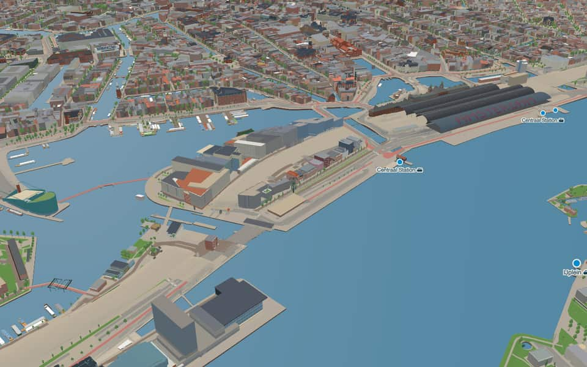
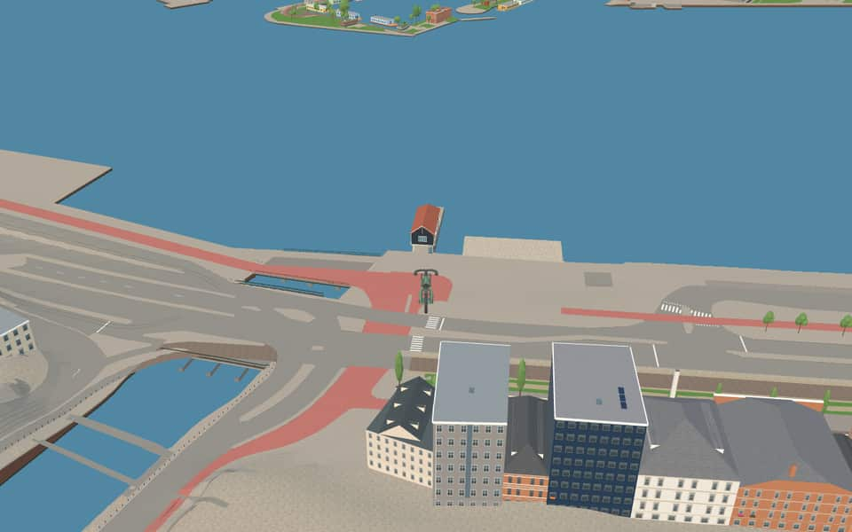
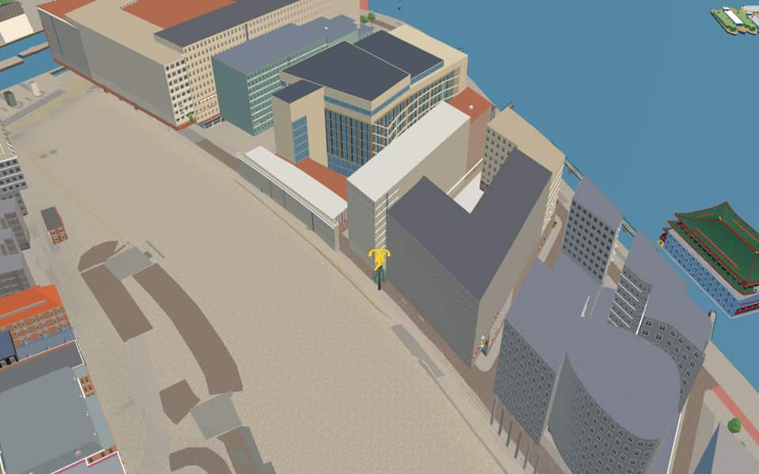
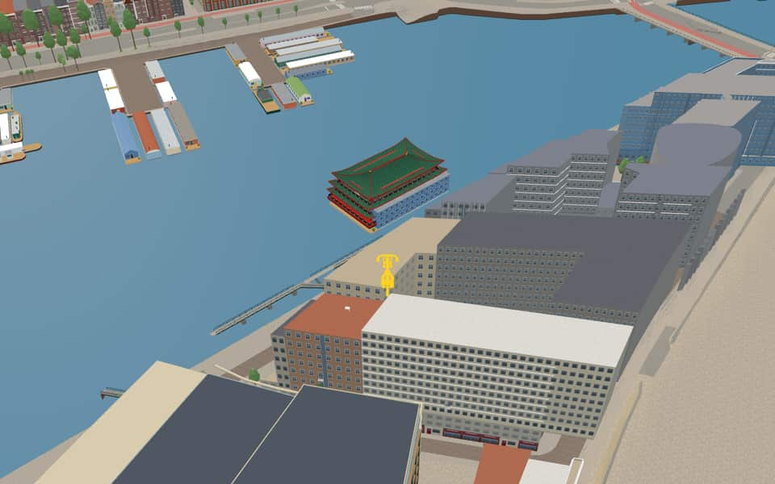

Neighbourhood in Nieuwmarkt/Lastage
Oosterdokseiland
Oosterdokseiland (Dutch: "Eastern Dock Island") is an island that forms a neighborhood of Amsterdam, Netherlands just to the east of Amsterdam Centraal railway station. en.wikipedia.org
The name. The name matches Oosterdokskade, in the area. The Oosterdok was created by a closing dike on the east side of the city, completed in 1832. The quay on and along this dike was named Oosterdokskade and Oostelijke Handelskade. Gemeente Amsterdam street-name register


In the game
Frames from a ride through Oosterdokseiland.




6 more photos of Oosterdokseiland


.jpg){kind=link}


Built here
Buildings modelled one by one for the ride.
NACO-house
OBA Oosterdok
Sea Palace
Did you know
Trivia the ride can show you here.
- The island began in 1832, when the Oosterdok was dammed off from the IJ. Wikipedia
- Amsterdam's main post office stood here from the 1960s until it was torn down in 2005. Wikipedia
- It grew to its present size when the first railway was built here in the 1870s. Wikipedia
- Around the Public Library Oosterdok, Erick van Egeraat's plan set tall buildings along narrow streets. Wikipedia (translated from Dutch)
- Since 13 December 2021 the little NACO-house has stood over the Oostertoegang canal. Wikipedia (translated from Dutch)
- Amsterdam Public Library OosterdokNew structures rose after 2003 featuring high buildings and narrow streets designed by Erick van Egeraat. nl.wikipedia.org
- NACO-houseThe unofficial name NACO-house comes from the Nederlandsche Auto Car Onderneming office that occupied it from the mid-1960s. nl.wikipedia.org
- Oosterdokse SpoorbrugThe line is informally called Oosterspoorweg, meaning Eastern railway. en.wikipedia.org
- IJThe largest part of the IJ was reclaimed between 1865 and 1876 to create new polders. en.wikipedia.org
- IJThe Buiten-IJ hosted mixed dinghy sailing events during the 1928 Summer Olympics in Amsterdam. en.wikipedia.org
- IJOranjesluizen locks divide the waterway into an inner section and an outer extension. en.wikipedia.org
- IJThe western part connects directly to the North Sea Canal while the eastern side extends the IJmeer. en.wikipedia.org
- OosterdokPrince Willem laid the first stone for the lock on June 11, 1830. en.wikipedia.org
- OosterdokThe double lock featured a small chamber finished before the large ocean-going one opened in 1832. en.wikipedia.org
12 more facts
- OosterdokThe western dyke end called Oosterdam was removed in the late 2010s to improve views. en.wikipedia.org
- OosterdokConstruction of this deep port occurred between 1831 and 1832. en.wikipedia.org
- OostertoegangThe canal dates to the Station Island construction between 1870 and 1880. nl.wikipedia.org
- OostertoegangA wide traffic bridge replaced a historic drawbridge that could no longer handle traffic. nl.wikipedia.org
- OostertoegangTram line 26 originally used a separate bridge before integrating into the main traffic structure in the 21st century. nl.wikipedia.org
- Open HavenfrontA building called Nieuwe Stadsherberg once stood on stilts directly in this water from 1660 to 1870. nl.wikipedia.org
- Open HavenfrontThe project cost an estimated 90 million euros to complete. nl.wikipedia.org
- De RuijterkadeSteam boats departed from this quay for northern and western destinations starting in 1880. nl.wikipedia.org
- De RuijterkadeA large construction pit for the IJzijde bus station occupied much of the area from 2004 onwards. nl.wikipedia.org
- De RuijterkadeAlthough named after the admiral with a y, the local spelling uses an i instead. nl.wikipedia.org
- Michiel de RuijtertunnelThe Michiel de Ruijtertunnel honors the famous Dutch admiral Michiel de Ruyter, who lived from 1607 to 1676. nl.wikipedia.org
- Michiel de RuijtertunnelConstruction began in 2003 and the tunnel finally opened to traffic on July 13, 2015. nl.wikipedia.org
Names on the map
Where the canal, bridge and street names come from.
Canals and water
- OosterdokThe Oosterdok was created by a closing dike on the east side of the city, completed in 1832. The quay on and along this dike was named Oosterdokskade and Oostelijke Handelskade.
- OosterdoksdoorgangThe water passage by the Oosterdokskade, which gives it its name.
- OostertoegangThe eastern entrance from the Oosterdok to the IJ.
- Open HavenfrontA former open waterfront, filled in to build Centraal Station.
- SixhavenJonkheer Willem Six (1859-1919), chairman of the Royal Sailing and Rowing Club from 1898 to 1919 and a great promoter of digging the marina in Amsterdam-Noord. He died two months before the harbour was completed, after which it was named after him.
- ZouthavenIn the past this was the city's salt harbour (Zouthaven).
1 other canal without a recorded story
IJ
Bridges
1 other bridge without a recorded story
Oosterdokse Spoorbrug
Streets
- Annie M.G. SchmidtstraatAnna Maria Geertruida Schmidt (1911-1995) wrote verse, songs, children's books, plays, musicals, cabaret texts, and radio and television programmes. For a long time she worked as a journalist for 'Het Parool'. Her children's books, including 'Pluk van de Petteflet' and the 'Jip en Janneke' series, are hugely popular.
- De RuijterkadeMichiel Adriaansz. de Ruyter (1607-1676), the renowned admiral of Holland and West Friesland. He was born in Vlissingen. In Amsterdam he lived on what is now the Prins Hendrikkade.
- Harry BanninkstraatComposer (1929-1999), arranger and pianist. His work includes the music for Annie M.G. Schmidt's musicals, among them 'Heerlijk duurt het langst' and 'Ja zuster, Nee zuster'.
- Hella HaassepleinHélène Serafia Haasse (1918-2011), writer of novels, essays, poetry and plays. She received the P.C. Hooft Prize in 1983 and the Prize for Dutch Literature in 2004. She wrote a record 3 Boekenweekgeschenken (Book Week gift books), among them 'Oeroeg' (1948), perhaps her best-known work. She is among the Dutch authors most read abroad.
- Michiel de RuijtertunnelMichiel Adriaansz. de Ruyter (1607-1676), the renowned admiral of Holland and West Friesland. He was born in Vlissingen. In Amsterdam he lived on what is now the Prins Hendrikkade.
- OosterdoksdraaibrugThis swing bridge is by the Oosterdok, hence the name.
- OosterdokskadeThe Oosterdok was created by a closing dike on the east side of the city, completed in 1832. The quay on and along this dike was named Oosterdokskade and Oostelijke Handelskade.
- OosterdoksstraatThe Oosterdok was created by a closing dike on the east side of the city, completed in 1832. The quay on and along this dike was named Oosterdokskade and Oostelijke Handelskade.
- OostertoegangThe eastern entrance from the Oosterdok to the IJ.
- Piet HeinkadePieter Pieterszoon Heyn (1577-1629), vice-admiral in the service of the West India Company, known for capturing the Spanish silver fleet in 1628 in the bay of Matanzas (Cuba).
- Simon CarmiggeltstraatSimon Johannes Carmiggelt (1913-1987), writer and journalist, best known for his newspaper columns ('Kronkels'), published under the pseudonym Kronkel in 'Het Parool'. In 1974 Carmiggelt received the P.C. Hooft Prize.
- Ton de LeeuwstraatComposer (1926-1996), at the Sweelinck Conservatory in Amsterdam from 1959 to 1987, first as senior teacher of composition and from 1984 as artistic director. He explored the relation between East and West in music and received many prizes, among them the Prix Italia and the Matthijs Vermeulen Prize.
1 more street with a story
- Willem Frederik HermansstraatWriter (1921-1995) and polemicist, lecturer in physical geography at the University of Groningen. His most famous novels include 'De donkere kamer van Damokles' (The Darkroom of Damocles) and 'Nooit meer slapen' (Beyond Sleep). Chaos and chance play a large part in his work. He made his name as a polemicist with 'Mandarijnen op zwavelzuur', in which he attacked the Dutch literary world. In 1977 he received the Prijs der Nederlandse Letteren.
3 other streets without a recorded story
Mr. J.J. van der Veldebrug · Odebrug · Waterplein Zuid